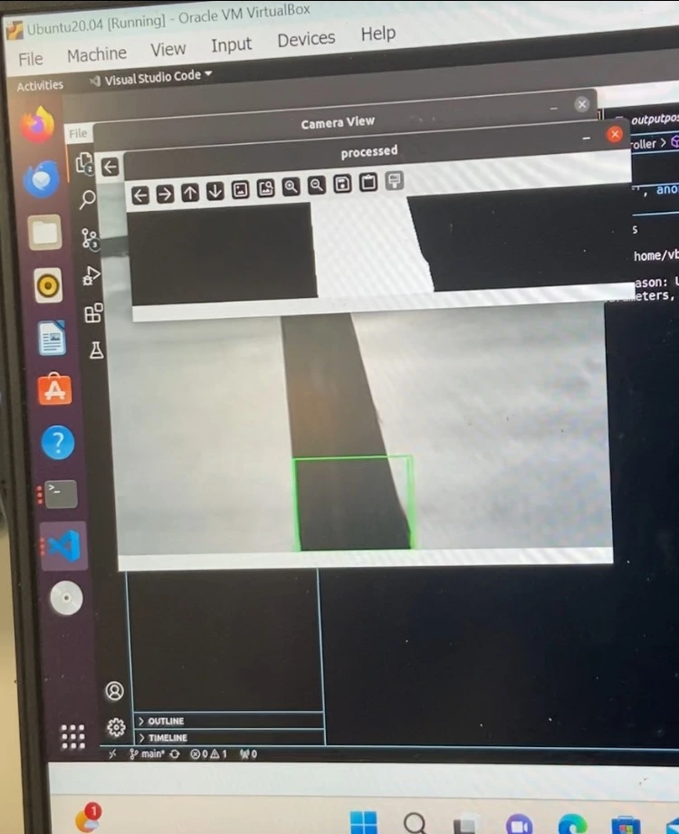
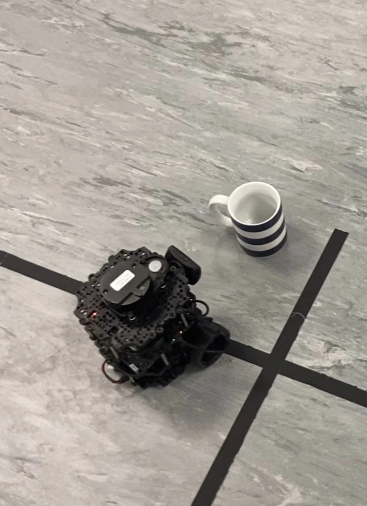
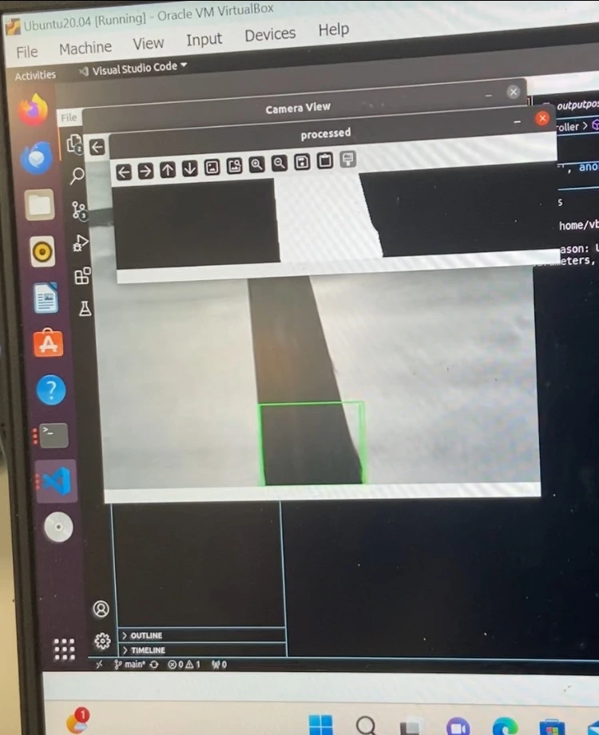
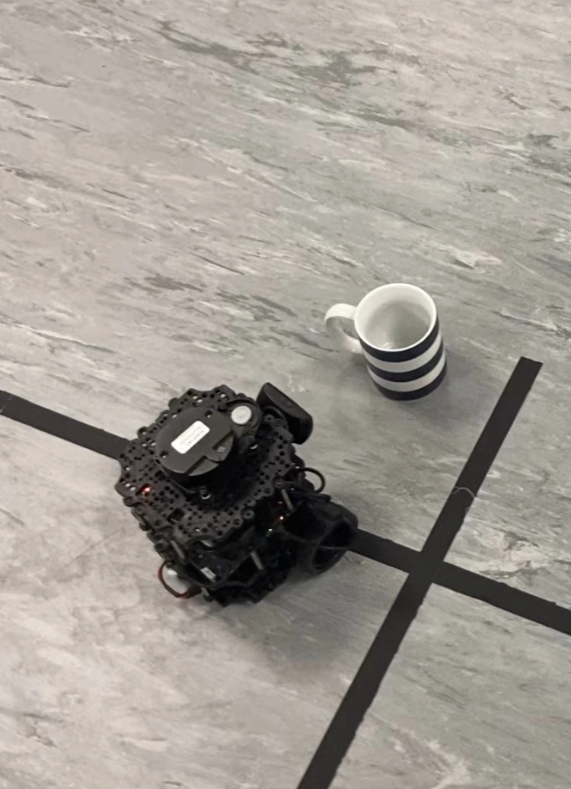

Autonomous Inventory Detection Robot
.webp)
 



Features
An inventory detection Robotic system for warehouses using ROS and PID line following. It detects the line using computer vision techniques,
to keep the system fast and responsive. This system was aimed at SMEs due to the cheap operating nature of the system.

• Line detection using HSI, closing Morph operation,
Gaussian Blur, colour mask
• error detection + PID (Zieger-Nicholas tuned)
• YOLOv8n tuned on custom inventory selection
• Position detection using line aspect ratio, to stop and turn + capture an image of inventory
• Output displaying number of positions, inventory detected at each position and overall + confidence score.
Components
Gaussian Blur, colour mask
• error detection + PID (Zieger-Nicholas tuned)
• YOLOv8n tuned on custom inventory selection
• Position detection using line aspect ratio, to stop and turn + capture an image of inventory
• Output displaying number of positions, inventory detected at each position and overall + confidence score.
• Turtlebot (raspberryPi, OpenCR cortex, 2 x Dynamixel motor, computer webcam, LiPo battery)
• ROS Noetic
• Python
• CMake
• 4 ROS nodes (USB_cam, Robot_controller, Turtlebot_core, Turtlebot_Diagnostics)
Repo
• ROS Noetic
• Python
• CMake
• 4 ROS nodes (USB_cam, Robot_controller, Turtlebot_core, Turtlebot_Diagnostics)